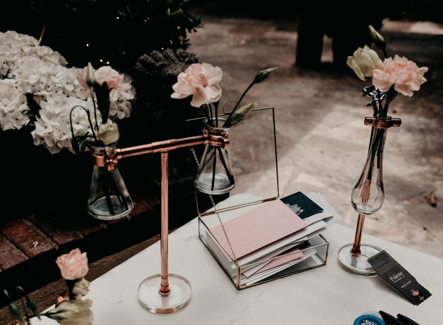

Furniture Design
A maker at heart, I see beauty in everyday building materials and am constantly inspired to assemble them into artful, utilitiarian objects.
This line of floral vessels was inspired by architectural hardware pieces and other objects of industry. Using primarily copper materials—I meticulously cut, shaped, polished, and assembled each piece by hand.
They are designed to highlight the beauty of a single bloom or two from your garden.
